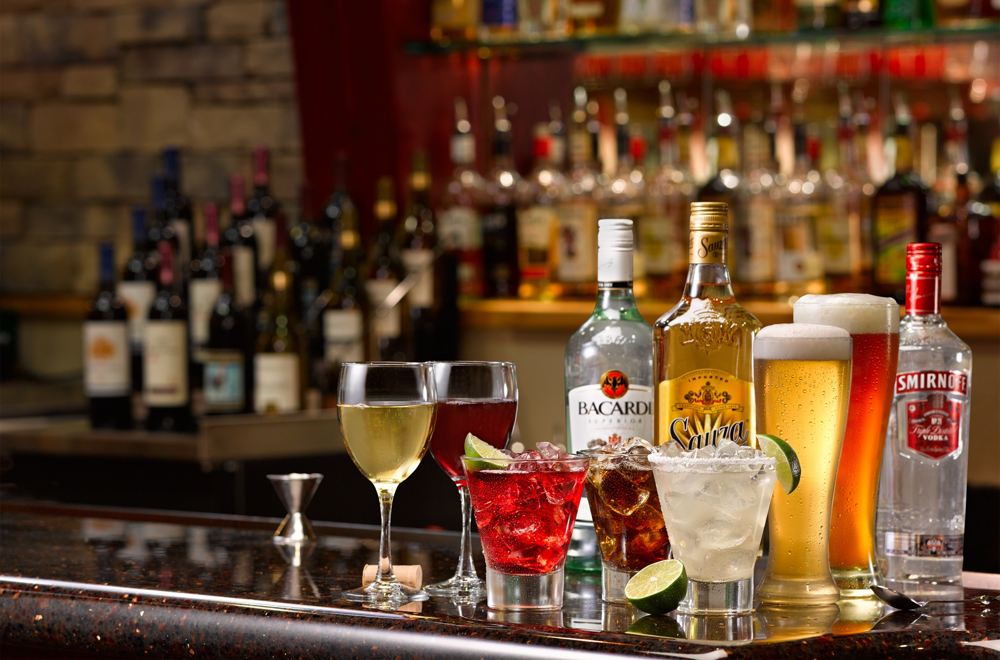

Ваш бар. Под звуки волынок (виски).

Как известно, когда-то очень давно на территории современной Великобритании существовало государство кельтов, завоеванное позднее великой Римской империей. Многие слова из кельтского языка были полностью или частично заимствованы англичанами (англосаксами), позднее заселившими территорию, принадлежавшую кельтам. Одним из первых заимствованных слов было слово «виски».
Этот известный на весь мир напиток англичане нередко называют «живой водой». Причина этого – в самом названии напитка. Ученые-лингвисты считают, что английское слово «whisky» имеет в своей основе древние, кельтские корни, восходящие к таким кельтским словам как «uisge baugh» или «uisge beatha», этимология которых связана с корнями «жизнь, произрастание» и «вода, жидкость». Таким образом, слово «whisky» означает «вода жизни». Эти слова кельтского происхождения являются аналогами латинского словосочетания «aqua vitae», что в переводе так же означает «вода жизни».
Алкогольные советы
Очень хорошим спутником спиртного является торт с кремом. Если же торжество проводится в «скромной» обстановке, то торт можно заменить бутербродами с большим количеством сливочного масла. Хороши также всевозможные жирные паштеты, которые нейтрализуют вредоносное воздействие алкоголя.
До сих пор не известно, кто имеет право называться создателем виски. Проблема эта довольно стара и связана с существующими вот уже много столетий разногласиями между государствами, входящими в состав королевства Великобритания. Так, две ее составляющих, а именно Шотландия и Ирландия, не желают уступать пальму первенства в производстве виски. Уже долгие-долгие годы эти две страны ведут спор о том, на чьей территории впервые появился этот напиток. Победителей в споре пока нет, да и быть не может, ведь на самом деле и шотландцы, и ирландцы имеют кельтские корни и с полным правом могут претендовать на обладание их наследием.
Однако самые ранние упоминания о виски найдены в шотландских средневековых записях, датированных 1494 годом, хотя ирландцы и оспаривают подобное доказательство, утверждая, что виски появилось значительно раньше и именно на территории их страны. К сожалению самих ирландцев, они не располагают письменными доказательствами утверждаемого ими первенства. К тому же, доподлинно известно, что в Шотландии, этой прекрасной стране поросших сочной травой гор и старинных замков, занимаются висковарением уже почти 600 лет. Этот аргумент часто оказывается решающим в споре двух стран.
Пословицы и поговорки об алкоголе
Муж за рюмку, жена за стакан.
Для того чтобы хоть как-то заявить о своем участии в зарождении этого знаменитого напитка, ирландцы придумали одну незамысловатую хитрость. Они на весь мир заявили о своем неодобрении того, что в последнее время все унаследованные английским языком слова кельтского происхождения стали писать на английский манер и сокращенно (что, в общем-то, является частью естественного процесса осовременивания и трансформации национальных языков). Поэтому в настоящее время можно встретить на бутылках с виски два варианта формы слова: «whisky» (английский вариант) и «whiskey» (американский вариант). С первым вариантом ирландцы категорически не согласились, отстаивая право на этимологическую достоверность. С тех самых пор слово «whisky» пишется без буквы «е» также в Шотландии и Канаде, а с буквой «е» – в самой Ирландии.
Шотландцы приняли во внимание претензии ирландской стороны, но ответили на них своеобразно: не сменой названия на этикетках, а расширением производства виски на всей территории Шотландии. И именно благодаря шотландцам виски в настоящее время очень часто называют на шотландский манер – «скотч» (от слова «scott», то есть «шотландский»).
Пословицы и поговорки об алкоголе
Муж пьет, а жена горшки бьет.
Технология производства виски была придумана и разработана монахами еще в средневековье. Как известно, в свободное от молений время монахи изучали химию, физику и медицину и стремились собственными руками приготовлять различные настои, обладающие целебными свойствами. Известно, что монахи готовили первое в истории человечества виски из ячменя, затем окуривали торфяным дымом и хранили готовый напиток в деревянных бочках из определенной породы дерева. К тому же они добавляли в виски талую воду, добытую из растопленного зимой снега.
В летописи 1494 года рассказывается о том, как монахи одного из шотландских монастырей получили первое виски. Там же дается подробное описание этого нового напитка, которое звучит следующим образом: «Виски – это жидкость, перегоняемая несколько раз и получаемая в результате брожения размятых хлебных злаков».
Русские традиции
Красное вино крайне популярно у представителей сферы бизнеса. Выбирая напитки для банкетов, бизнесмены остановили свой взгляд именно на красном вине. Этот напиток является очень качественным, обладает незабываемом ароматом, а потому позволяет намного быстрее прийти к согласию. Первыми ввели его в ранг бизнес-напитка англичане, которые перед заключением сделки стремились напоить своего партнера так, чтобы он соглашался со всеми необходимыми требованиями. Сегодня красное вино считается символом доверия и скрепления заключенного договора.
В связи с быстро выявленными целебными свойствами, процессом производства виски начали активно интересоваться врачи (в основном, хирурги), и цирюльники (которые в те далекие времена были подобием современных терапевтов и стоматологов в одном лице). В результате интерес к виски поставил под серьезную угрозу производство хлеба в Шотландии, так как выращиваемого в то время ячменя не стало хватать для выпечки. Дело приняло настолько серьезный оборот, что его рассмотрением стало заниматься правительство, которое приняло в результате закон, устанавливающий налог на производителей виски.
С изобретением и налаживанием производства виски по всей стране стали появляться так называемые вискикурильни, которые представляли собой затейливые строения из мшистого камня, тут и там виднеющиеся среди серобархатных шотландских пейзажей. Эти заведения представляют собой своего рода колдовские места для всех жителей Шотландии, и это не удивительно, ведь в вискикурильнях происходит таинство рождения настоящего виски.
Пословицы и поговорки об алкоголе
На грош выпил, на пятак удали прибавил.
Как уже говорилось выше, виски был изобретен монахами. Этот спиртной напиток появился отнюдь не случайно. Мы не можем точно и в подробностях установить, как именно все произошло, но дело было примерно так: монахи взяли пророщенное зерно ячменя, высушив и перемолов его, залили водой и оставили в бочке. В результате они получили спирт, который оставили в дубовой бочке на несколько лет – таким образом и появился настоящий виски.
Конечно же, производители не ограничились одним-единственным сортом напитка и стали активно экспериментировать. Так, виски стали делать не только из ячменя, но из кукурузы, ржи и пшеницы. Соединив несколько видов зрелого виски, производители получили совершенно новый вкус и аромат. В итоге появилось несколько определенных сортов этого алкогольного напитка.
Со временем в Шотландии появились настоящие мастера по производству лучшего виски. Некоторые из них смогли на весь мир прославить свое имя. В частности, знаменитые братья Чивас, которые организовали свою вискикурильню, переросшую впоследствии в большую компанию «Чивас Бразерс». Виски, производившийся ими, получил свое второе название – «Chivas», которое и по сей день является маркой компании, поставляющей напиток во все страны мира. Эта компания является старейшим массовым производителем виски. Она завоевала очень высокую репутацию тем, что стала поставщиком виски ко двору ее величества королевы английской.
Секрет шотландских мастеров, по их же словам, заключается в шотландской воде. До сегодняшнего дня специалисты считают, что такой вкусной воды, как шотландская, нет во всем мире. Действительно, вода в горных источниках Шотландии обладает неповторимыми и редкостными вкусовыми качествами и химическим составом. Каждый производитель виски старался отыскать свой особенный и недоступный для других источник воды, чем и объясняется большое разнообразие существующих на сегодняшний день сортов виски.
Так, и братья Чивас не остановились на каком-то одном сорте виски, а продолжили приготовление все новых и новых сортов. Они стали смешивать различные сорта виски и хранили их в дубовых бочках, в которых раньше отстаивались коньяки, мадера и херес. Благодаря бочкам, ранее использованным под другие алкогольные напитки, хранившееся в них виски приобретало свой неповторимый вкус. Известно, что братья Чивас смешивали до сорока сортов виски. При этом они хранили в строжайшем секрете технологию производства напитка. И по сей день пропорции исходных компонентов для производства виски мастерами компании не разглашаются. Всего мастеров-винокуров в компании Чивас 10—12 человек (говорят, что, подписывая контракт с компанией, они обязуются никогда не летать вместе в одном самолете, дабы в случае авиакатастрофы искусство изготовления виски не было утрачено).
С самого начального этапа существования виски было отмечено, что оно согревает человека, успокаивает его душу и дарит чувство душевного тепла и спокойствия. Умиротворяющее свойство виски заметили не только средневековые монахи, но и лекари, и одно время его рекомендовали пациентам как успокаивающее средство. Но вскоре виски перестало употребляться как целебное средство и стал рассматриваться как алкогольный напиток. При этом со временем выяснилось, что в виски главную роль играет не столько процентное содержание алкоголя, сколько сам вкус. Люди заметили, что чем больше выдержка виски, тем мягче и глубже, а одновременно и крепче становится его вкус. Поиск нового вкуса виски так понравился жителям Шотландии, что они стали подбирать различные компоненты, насыщающие виски все новыми ароматами. Так, в качестве наполнителей начали применять мед, травы, пряности, спелые красные яблоки, херес, фруктовый сок.
Особая заслуга в изобретении новых сортов виски принадлежит жителям северных районов Шотландии. В этой местности довольно суровый влажный климат и множество торфяных болот. Северные шотландцы открыли миру секрет производства так называемого «копченого» виски. Дело в том, что один шотландец, имя которого осталось для истории не известным, предложил коптить зерна ячменя на торфяном дыму. Благодаря этой операции виски приобретает ни с чем не сравнимый тяжеловатый копченый вкус, так ценимый алкогольными гурманами.
Хотя в Шотландии методы приготовления виски и были одинаковыми, тем не менее, хроники говорят нам о том, что существовали различные сорта виски в Хайленде, Лоуленде, Кэмпбелтауне и Айлейле, которые стали основными историческим центрами по производству данного вида спиртного. Секрет кроется в различном качестве и запахе горящего торфа, который встречается в вышеназванных центрах.
Необходимо сказать несколько слов о том, как виски распространилось за пределами Великобритании. Например, в Канаду виски попало гораздо позднее и привезли его туда первые поселенцы из Европы. Естественно, это были англичане и шотландцы. Производить виски в Канаде стали в начале XIX века. Конадское виски имеет свои особенности. Так, местные производители выдерживают этот напиток в течение шести лет, пока оно не достигнет крепости 45 %.
В скором времени и Америка обратила внимание на виски и всерьез занялась его производством. Самыми большими центрами по производству виски стали штаты Кентукки, Пенсильвания и Индиана. Особенность американского виски состоит в том, что содержание алкоголя в нем достигало порой 80 %, в связи с чем местные жители были вынуждены разбавлять его водой, доводя крепость напитка до 50—52 %.
Америка славится своим собственным сортом виски под названием «Бурбон», который впервые был приготовлен в одноименной деревушке штата Кентукки. Название ее закрепилось за данным сортом виски. Изобрели «Бурбон» жители деревни, которые решили сами приготовить для себя спиртное, воспользовавшись записями производства виски, позаимствованными у представителей туманного Альбиона.
Существует еще одна страна, где производство виски развито достаточно широко, – Япония. Точная дата появления виски в Японии не известна, но вероятно, это случилось после того как европейцы открыли для себя дальневосточные страны, когда активно стала развиваться торговля с Китаем и Японией.
Алкогольные советы
Перед тем как отправляться на праздник, на котором планируется обширное застолье, нужно съесть что-нибудь жирное. Это может быть просто кусочек сливочного масла или бутерброд с жирной колбасой или паштетом. Жир создаст тонкую пленку на стенках желудка и не позволит алкоголю проникнуть в них.
Первые упоминания о виски в Японии относятся к концу XVIII века. Завезли его в Страну Восходящего Солнца вездесущие американцы. Однако японцы изготовляли виски в небольших количествах, отдавая предпочтение национальным напиткам (чаще всего – рисовой водке сакэ). Однако деловая жилка взяла верх и через довольно короткое время японцы основали вискикурильни на всех крупных островах своей маленькой страны. Со временем самым крупным центром по производству виски стала столица Японии – город Токио.
Такова краткая история знаменитого напитка. Появившись как изобретение монахов-целителей, виски нашло своих почитателей во всем мире. Во многих странах данный напиток стал любимым для множества людей, вынуждая правительства этих стран вводить на его производство непомерные налоги, превращая тем самым виски в довольно дорогое удовольствие. И только в XVIII—XIX веках предприниматели взялись за виски всерьез и смогли добиться повышения его качества, а также значительно расширили рынок сбыта, закрепив право производства виски лишь за несколькими странами.